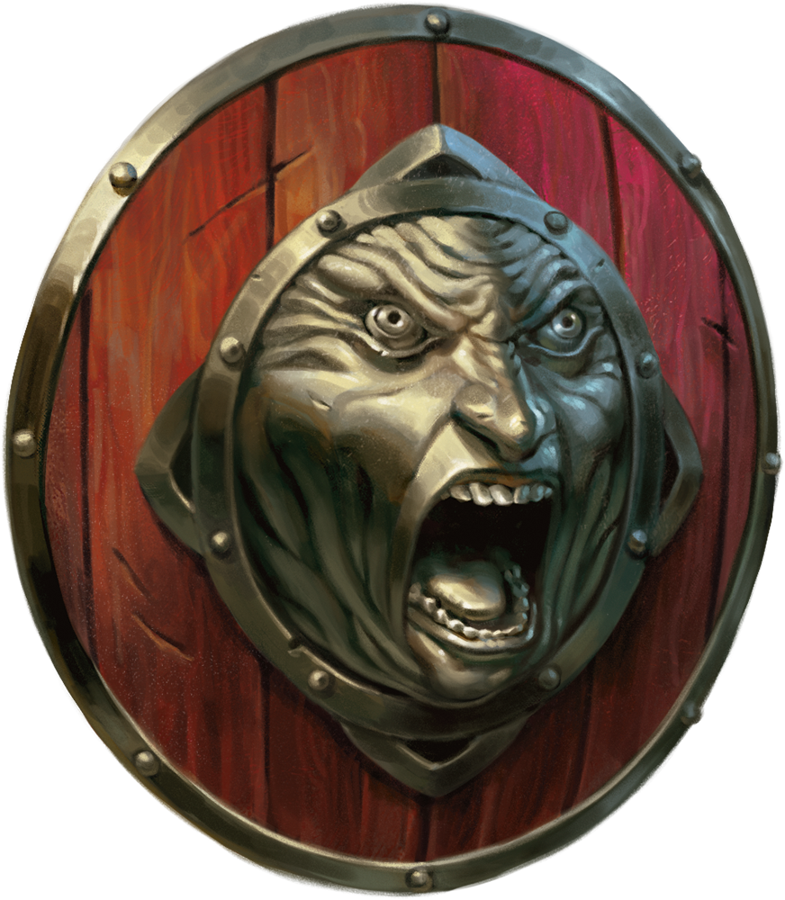
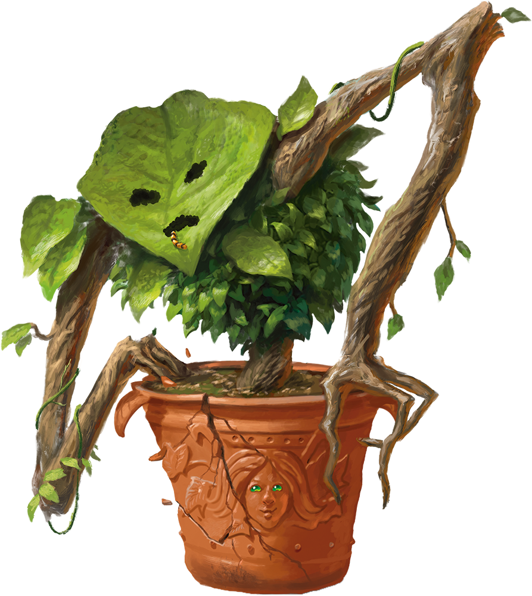
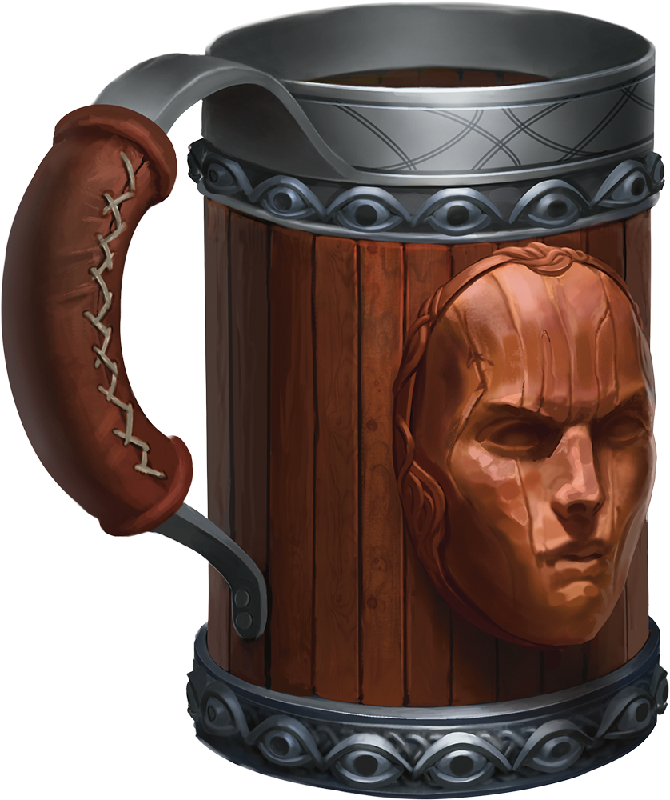
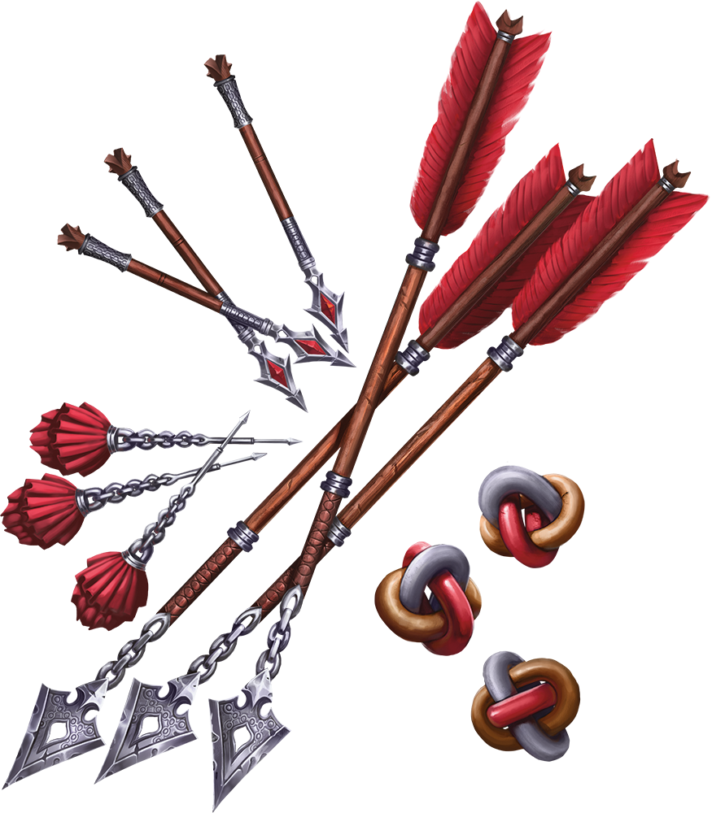
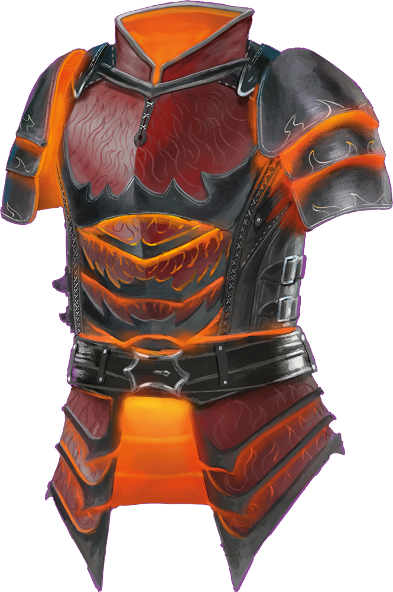
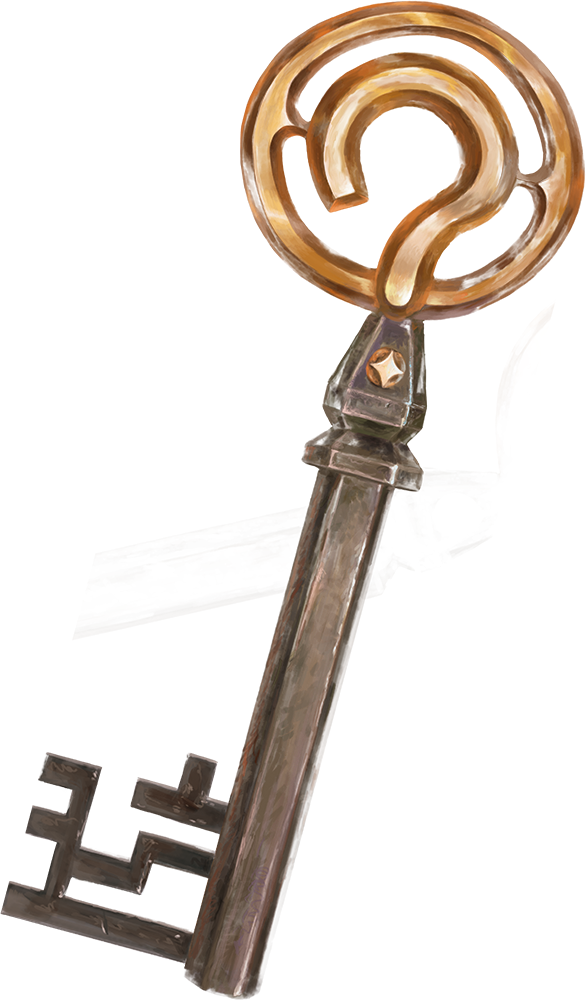

The front of this Shield is shaped in the likeness of a face. While bearing the Shield, you can take a Bonus Action to alter the face’s expression.

If you plant an ordinary shrub in this clay pot and let it grow for 30 days, the shrub magically transforms into an Awakened Shrub.

You can drink ale, wine, or any other nonmagical alcoholic beverage poured into it without becoming inebriated.

A creature hit by this ammunition must succeed on a DC 10 Strength saving throw or have the Prone condition.

Wisps of harmless, odorless smoke rise from this armor while it is worn.

A question mark is worked into the head of this key. The key has a 5 percent chance of unlocking any lock into which it’s inserted.
Item art & card texture © Wizards of the Coast
Wood texture © Architextures